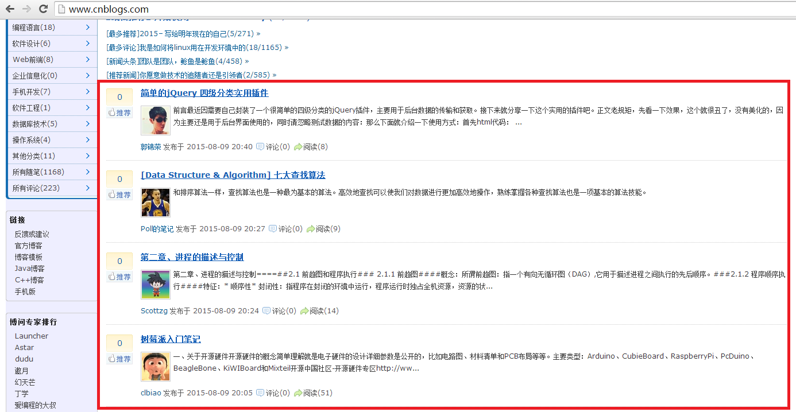

PHP 用QueryList抓取网页内容
之前抓取网页数据都是用Java Jsoup,前几天听说用PHP抓更方便,今天就简单研究了一下,主要是用QueryList来实现.
QueryList是一个基于phpQuery的通用列表采集类,是一个简单、 灵活、强大的采集工具，采集任何复杂的页面 基本上就一句话就能搞定了.
直接拿博客园举例子了,http://www.cnblogs.com/ 我们用QueryList来抓取红框里面的内容

查看网页源代码找到红框的位置


1 <div id="post_list"> 2 3 <div class="post_item"> 4 <div class="digg"> 5 <div class="diggit" onclick="DiggPost('jr1993',4716308,222703,1)"> 6 <span class="diggnum" id="digg_count_4716308">0</span> 7 </div> 8 <div class="clear"></div> 9 <div id="digg_tip_4716308" class="digg_tip"></div> 10 </div> 11 <div class="post_item_body"> 12 <h3><a class="titlelnk" href="http://www.cnblogs.com/jr1993/p/4716308.html" target="_blank">简单的jQuery 四级分类实用插件</a></h3> 13 <p class="post_item_summary"> 14 <a href="http://www.cnblogs.com/jr1993/" target="_blank"><img width="48" height="48" class="pfs" src="http://pic.cnblogs.com/face/694143/20141118194530.png" alt=""></a> 前言最近因需要自己封装了一个很简单的四级分类的jQuery插件，主要用于后台数据的传输和获取。接下来就分享一下这个实用的插件吧。正文老规矩，先看一下效果，这个就很丑了，没有美化的，因为主要还是用于后台界面使用的，同时请忽略测试数据的内容：那么下面就介绍一下使用方式：首先html代码： ... 15 </p> 16 <div class="post_item_foot"> 17 <a href="http://www.cnblogs.com/jr1993/" class="lightblue">郭锦荣</a> 18 发布于 2015-08-09 20:40 19 <span class="article_comment"><a href="http://www.cnblogs.com/jr1993/p/4716308.html#commentform" title="" class="gray"> 20 评论(0)</a></span><span class="article_view"><a href="http://www.cnblogs.com/jr1993/p/4716308.html" class="gray">阅读(21)</a></span></div> 21 </div> 22 <div class="clear"></div> 23 </div> 24 <div class="post_item"> 25 <div class="digg"> 26 <div class="diggit" onclick="DiggPost('maybe2030',4715035,229915,1)"> 27 <span class="diggnum" id="digg_count_4715035">0</span> 28 </div> 29 <div class="clear"></div> 30 <div id="digg_tip_4715035" class="digg_tip"></div> 31 </div> 32 <div class="post_item_body"> 33 <h3><a class="titlelnk" href="http://www.cnblogs.com/maybe2030/p/4715035.html" target="_blank">[Data Structure & Algorithm] 七大查找算法</a></h3> 34 <p class="post_item_summary"> 35 <a href="http://www.cnblogs.com/maybe2030/" target="_blank"><img width="48" height="48" class="pfs" src="http://pic.cnblogs.com/face/764050/20150531155648.png" alt=""></a> 和排序算法一样，查找算法也是一种最为基本的算法。高效地查找可以使我们对数据进行更加高效地操作，熟练掌握各种查找算法也是一项基本的算法技能。 36 </p> 37 <div class="post_item_foot"> 38 <a href="http://www.cnblogs.com/maybe2030/" class="lightblue">Poll的笔记</a> 39 发布于 2015-08-09 20:27 40 <span class="article_comment"><a href="http://www.cnblogs.com/maybe2030/p/4715035.html#commentform" title="" class="gray"> 41 评论(0)</a></span><span class="article_view"><a href="http://www.cnblogs.com/maybe2030/p/4715035.html" class="gray">阅读(12)</a></span></div> 42 </div> 43 <div class="clear"></div> 44 </div> 45 <div class="post_item"> 46 <div class="digg"> 47 <div class="diggit" onclick="DiggPost('zhanggui',4716267,191738,1)"> 48 <span class="diggnum" id="digg_count_4716267">0</span> 49 </div> 50 <div class="clear"></div> 51 <div id="digg_tip_4716267" class="digg_tip"></div> 52 </div> 53 <div class="post_item_body"> 54 <h3><a class="titlelnk" href="http://www.cnblogs.com/zhanggui/p/4716267.html" target="_blank">第二章、进程的描述与控制</a></h3> 55 <p class="post_item_summary"> 56 <a href="http://www.cnblogs.com/zhanggui/" target="_blank"><img width="48" height="48" class="pfs" src="http://pic.cnblogs.com/face/527522/20140908182900.png" alt=""></a> 第二章、进程的描述与控制====##2.1 前趋图和程序执行### 2.1.1 前趋图####概念：所谓前趋图：指一个有向无循环图（DAG）,它用于描述进程之间执行的先后顺序。###2.1.2 程序顺序执行####特征：* 顺序性* 封闭性：指程序在封闭的环境中运行，程序运行时独占全机资源，资源的状... 57 </p> 58 <div class="post_item_foot"> 59 <a href="http://www.cnblogs.com/zhanggui/" class="lightblue">Scottzg</a> 60 发布于 2015-08-09 20:24 61 <span class="article_comment"><a href="http://www.cnblogs.com/zhanggui/p/4716267.html#commentform" title="" class="gray"> 62 评论(0)</a></span><span class="article_view"><a href="http://www.cnblogs.com/zhanggui/p/4716267.html" class="gray">阅读(17)</a></span></div> 63 </div> 64 <div class="clear"></div> 65 </div> 66 <div class="post_item"> 67 <div class="digg"> 68 <div class="diggit" onclick="DiggPost('lubiao',4716200,158099,1)"> 69 <span class="diggnum" id="digg_count_4716200">0</span> 70 </div> 71 <div class="clear"></div> 72 <div id="digg_tip_4716200" class="digg_tip"></div> 73 </div> 74 <div class="post_item_body"> 75 <h3><a class="titlelnk" href="http://www.cnblogs.com/lubiao/p/4716200.html" target="_blank">树莓派入门笔记</a></h3> 76 <p class="post_item_summary"> 77 <a href="http://www.cnblogs.com/lubiao/" target="_blank"><img width="48" height="48" class="pfs" src="http://pic.cnblogs.com/face/550600/20150808222928.png" alt=""></a> 一、关于开源硬件开源硬件的概念简单理解就是电子硬件的设计详细参数是公开的，比如电路图、材料清单和PCB布局等等。主要类型：Arduino、CubieBoard、RaspberryPi、PcDuino、BeagleBone、KiWIBoard和Mixteil开源中国社区-开源硬件专区http://ww... 78 </p> 79 <div class="post_item_foot"> 80 <a href="http://www.cnblogs.com/lubiao/" class="lightblue">clbiao</a> 81 发布于 2015-08-09 20:05 82 <span class="article_comment"><a href="http://www.cnblogs.com/lubiao/p/4716200.html#commentform" title="" class="gray"> 83 评论(0)</a></span><span class="article_view"><a href="http://www.cnblogs.com/lubiao/p/4716200.html" class="gray">阅读(59)</a></span></div> 84 </div> 85 <div class="clear"></div> 86 </div> 87 <div class="post_item"> 88 <div class="digg"> 89 <div class="diggit" onclick="DiggPost('xiaoheimiaoer',4716191,124701,1)"> 90 <span class="diggnum" id="digg_count_4716191">0</span> 91 </div> 92 <div class="clear"></div> 93 <div id="digg_tip_4716191" class="digg_tip"></div> 94 </div> 95 <div class="post_item_body"> 96 <h3><a class="titlelnk" href="http://www.cnblogs.com/xiaoheimiaoer/p/4716191.html" target="_blank">JS监听组合按键</a></h3> 97 <p class="post_item_summary"> 98 <a href="http://www.cnblogs.com/xiaoheimiaoer/" target="_blank"><img width="48" height="48" class="pfs" src="http://pic.cnblogs.com/face/435330/20140328110126.png" alt=""></a> 有些时候，我们需要在网页上，增加一些快捷按键，方便用户使用一些常用的操作，比如：保存，撤销，复制、粘贴等等。 下面简单梳理一下思路： 我们所熟悉的按键有这么集中类型：单独的按键操作，如：delete、up、down等两位组合建，如：ctrl（cmd）+ 其他按键，alt+其他按键，shift... 99 </p> 100 <div class="post_item_foot"> 101 <a href="http://www.cnblogs.com/xiaoheimiaoer/" class="lightblue">黑MAO</a> 102 发布于 2015-08-09 19:59 103 <span class="article_comment"><a href="http://www.cnblogs.com/xiaoheimiaoer/p/4716191.html#commentform" title="" class="gray"> 104 评论(0)</a></span><span class="article_view"><a href="http://www.cnblogs.com/xiaoheimiaoer/p/4716191.html" class="gray">阅读(36)</a></span></div> 105 </div> 106 <div class="clear"></div> 107 </div> 108 <div class="post_item"> 109 <div class="digg"> 110 <div class="diggit" onclick="DiggPost('QG-whz',4716139,205933,1)"> 111 <span class="diggnum" id="digg_count_4716139">0</span> 112 </div> 113 <div class="clear"></div> 114 <div id="digg_tip_4716139" class="digg_tip"></div> 115 </div> 116 <div class="post_item_body"> 117 <h3><a class="titlelnk" href="http://www.cnblogs.com/QG-whz/p/4716139.html" target="_blank">编译器角度看C++复制构造函数</a></h3> 118 <p class="post_item_summary"> 119 <a href="http://www.cnblogs.com/QG-whz/" target="_blank"><img width="48" height="48" class="pfs" src="http://pic.cnblogs.com/face/610439/20150502210248.png" alt=""></a> #[C++对象模型]复制构造函数的建构操作关于复制构造函数的简单介绍，可以看我以前写过的一篇文章[Ｃ＋＋复制控制之复制构造函数](http://www.cnblogs.com/QG-whz/p/4485574.html "C++ 复制控制之复制构造函数")该文章中介绍了复制构造函数的定义、调用时机、... 120 </p> 121 <div class="post_item_foot"> 122 <a href="http://www.cnblogs.com/QG-whz/" class="lightblue">melonstreet</a> 123 发布于 2015-08-09 19:44 124 <span class="article_comment"><a href="http://www.cnblogs.com/QG-whz/p/4716139.html#commentform" title="" class="gray"> 125 评论(0)</a></span><span class="article_view"><a href="http://www.cnblogs.com/QG-whz/p/4716139.html" class="gray">阅读(41)</a></span></div> 126 </div> 127 <div class="clear"></div> 128 </div> 129 <div class="post_item"> 130 <div class="digg"> 131 <div class="diggit" onclick="DiggPost('advances',4716089,238649,1)"> 132 <span class="diggnum" id="digg_count_4716089">1</span> 133 </div> 134 <div class="clear"></div> 135 <div id="digg_tip_4716089" class="digg_tip"></div> 136 </div> 137 <div class="post_item_body"> 138 <h3><a class="titlelnk" href="http://www.cnblogs.com/advances/p/4716089.html" target="_blank">【Cocos2d入门教程三】HelloWorld之一目了然</a></h3> 139 <p class="post_item_summary"> 140 <a href="http://www.cnblogs.com/advances/" target="_blank"><img width="48" height="48" class="pfs" src="http://pic.cnblogs.com/face/794244/20150804212641.png" alt=""></a> 什么程序都是从HelloWorld先开始。同样Cocos2d-x我们先从HelloWorld进行下手、下面是HelloWorld的运行完成图：建立好的Cocos游戏项目中会有两个比较常用接触的文件夹。分别为Classes与resource。Classes存取代码文件，resource存取资源文件,下... 141 </p> 142 <div class="post_item_foot"> 143 <a href="http://www.cnblogs.com/advances/" class="lightblue">蔡明勇</a> 144 发布于 2015-08-09 19:27 145 <span class="article_comment"><a href="http://www.cnblogs.com/advances/p/4716089.html#commentform" title="2015-08-09 20:37" class="gray"> 146 评论(5)</a></span><span class="article_view"><a href="http://www.cnblogs.com/advances/p/4716089.html" class="gray">阅读(65)</a></span></div> 147 </div> 148 <div class="clear"></div> 149 </div> 150 <div class="post_item"> 151 <div class="digg"> 152 <div class="diggit" onclick="DiggPost('kodoyang',4715572,180900,1)"> 153 <span class="diggnum" id="digg_count_4715572">0</span> 154 </div> 155 <div class="clear"></div> 156 <div id="digg_tip_4715572" class="digg_tip"></div> 157 </div> 158 <div class="post_item_body"> 159 <h3><a class="titlelnk" href="http://www.cnblogs.com/kodoyang/p/MonteCarloMethod_PI.html" target="_blank">蒙特卡罗方法计算圆周率</a></h3> 160 <p class="post_item_summary"> 161 <a href="http://www.cnblogs.com/kodoyang/" target="_blank"><img width="48" height="48" class="pfs" src="http://pic.cnblogs.com/face/618527/20150809193301.png" alt=""></a> 为了避免计算时间超过十秒钟，很随意的减小了样本值。 【方形中的所有像素计算】中一共计算10^8次，当在【方形中的随机像素计算】中也计算相同的次数时，就会陷入等待。 猜测原因是获取随机数的时候浪费了很多时间，也可能是循环的次数太多消耗时间。 【方形中的随机像素求平均值】中巴10^8分成了计算10... 162 </p> 163 <div class="post_item_foot"> 164 <a href="http://www.cnblogs.com/kodoyang/" class="lightblue">kodoyang</a> 165 发布于 2015-08-09 19:24 166 <span class="article_comment"><a href="http://www.cnblogs.com/kodoyang/p/MonteCarloMethod_PI.html#commentform" title="" class="gray"> 167 评论(0)</a></span><span class="article_view"><a href="http://www.cnblogs.com/kodoyang/p/MonteCarloMethod_PI.html" class="gray">阅读(48)</a></span></div> 168 </div> 169 <div class="clear"></div> 170 </div> 171 <div class="post_item"> 172 <div class="digg"> 173 <div class="diggit" onclick="DiggPost('xyczero',4716019,198864,1)"> 174 <span class="diggnum" id="digg_count_4716019">0</span> 175 </div> 176 <div class="clear"></div> 177 <div id="digg_tip_4716019" class="digg_tip"></div> 178 </div> 179 <div class="post_item_body"> 180 <h3><a class="titlelnk" href="http://www.cnblogs.com/xyczero/p/4716019.html" target="_blank">Android 之夜间模式(多主题)的实现</a></h3> 181 <p class="post_item_summary"> 182 <a href="http://www.cnblogs.com/xyczero/" target="_blank"><img width="48" height="48" class="pfs" src="http://pic.cnblogs.com/face/674691/20140930230333.png" alt=""></a> ##引言夜间模式其实属于多主题切换的一种，不过是最麻烦的一种。因为在夜间模式下不仅要切换主色调，次要色调等等，还要覆盖一些特殊的颜色，因为在夜间模式下总不能什么都是黑的把，那不得丑死-。-，所以当你夜间模式完成后，你的App对于日后多主题的扩展就可以轻松胜任了。##实现思路多数App由于历史原因当对... 183 </p> 184 <div class="post_item_foot"> 185 <a href="http://www.cnblogs.com/xyczero/" class="lightblue">xyczero</a> 186 发布于 2015-08-09 18:40 187 <span class="article_comment"><a href="http://www.cnblogs.com/xyczero/p/4716019.html#commentform" title="" class="gray"> 188 评论(0)</a></span><span class="article_view"><a href="http://www.cnblogs.com/xyczero/p/4716019.html" class="gray">阅读(78)</a></span></div> 189 </div> 190 <div class="clear"></div> 191 </div> 192 <div class="post_item"> 193 <div class="digg"> 194 <div class="diggit" onclick="DiggPost('xishuai',4715000,124657,1)"> 195 <span class="diggnum" id="digg_count_4715000">8</span> 196 </div> 197 <div class="clear"></div> 198 <div id="digg_tip_4715000" class="digg_tip"></div> 199 </div> 200 <div class="post_item_body"> 201 <h3><a class="titlelnk" href="http://www.cnblogs.com/xishuai/p/4715000.html" target="_blank">2015－写给明年现在的自己</a></h3> 202 <p class="post_item_summary"> 203 <a href="http://www.cnblogs.com/xishuai/" target="_blank"><img width="48" height="48" class="pfs" src="http://pic.cnblogs.com/face/435188/20130715165802.png" alt=""></a> 《[2014－写给明年现在的自己](http://www.cnblogs.com/xishuai/p/3900217.html)》时间如流水，转眼又是一年，回头看去年现在的自己，仿佛还在昨天。去年的那篇博文，如果认真去读的话，你会发现我是带有情绪的，对自己以及对所看到人和事不满的一种情绪发泄，写出来... 204 </p> 205 <div class="post_item_foot"> 206 <a href="http://www.cnblogs.com/xishuai/" class="lightblue">田园里的蟋蟀</a> 207 发布于 2015-08-09 18:08 208 <span class="article_comment"><a href="http://www.cnblogs.com/xishuai/p/4715000.html#commentform" title="2015-08-09 20:17" class="gray"> 209 评论(5)</a></span><span class="article_view"><a href="http://www.cnblogs.com/xishuai/p/4715000.html" class="gray">阅读(289)</a></span></div> 210 </div> 211 <div class="clear"></div> 212 </div> 213 <div class="post_item"> 214 <div class="digg"> 215 <div class="diggit" onclick="DiggPost('anding',4715440,76293,1)"> 216 <span class="diggnum" id="digg_count_4715440">7</span> 217 </div> 218 <div class="clear"></div> 219 <div id="digg_tip_4715440" class="digg_tip"></div> 220 </div> 221 <div class="post_item_body"> 222 <h3><a class="titlelnk" href="http://www.cnblogs.com/anding/p/4715440.html" target="_blank">Winform开发全套31个UI组件开源共享</a></h3> 223 <p class="post_item_summary"> 224 <a href="http://www.cnblogs.com/anding/" target="_blank"><img width="48" height="48" class="pfs" src="http://pic.cnblogs.com/face/151257/20150809180411.png" alt=""></a> 一．前言 这套UI库是上一个公司（好几年前了）完成的。当时主要为开发公司内部ERP系统，重新设计实现了所有用到的Winform组建，包括Form窗体组建6个（支持换肤），基础控件25个。其中有很多参考借鉴其他开源组件，也有几个是集成的别人的组件，然后做了些调整。 现在已经好几年不做Winform..... 225 </p> 226 <div class="post_item_foot"> 227 <a href="http://www.cnblogs.com/anding/" class="lightblue">/*梦里花落知多少*/</a> 228 发布于 2015-08-09 18:01 229 <span class="article_comment"><a href="http://www.cnblogs.com/anding/p/4715440.html#commentform" title="2015-08-09 20:33" class="gray"> 230 评论(4)</a></span><span class="article_view"><a href="http://www.cnblogs.com/anding/p/4715440.html" class="gray">阅读(346)</a></span></div> 231 </div> 232 <div class="clear"></div> 233 </div> 234 <div class="post_item"> 235 <div class="digg"> 236 <div class="diggit" onclick="DiggPost('liulun',4714858,32486,1)"> 237 <span class="diggnum" id="digg_count_4714858">1</span> 238 </div> 239 <div class="clear"></div> 240 <div id="digg_tip_4714858" class="digg_tip"></div> 241 </div> 242 <div class="post_item_body"> 243 <h3><a class="titlelnk" href="http://www.cnblogs.com/liulun/p/4714858.html" target="_blank">用Nim语言开发windows GUI图形界面程序</a></h3> 244 <p class="post_item_summary"> 245 <a href="http://www.cnblogs.com/liulun/" target="_blank"><img width="48" height="48" class="pfs" src="http://pic.cnblogs.com/face/u28932.png?id=12164046" alt=""></a> 前言本文得到了“樂師”的大力支持，我们一起调试程序到深夜，要是没有他的帮忙，我不知道要多久才能迈过这道坎，另外“归心”还有其他人也提供了帮助，他们都来自于QQ群：“Nim开发集中营”469329878；感兴趣的朋友，可以加这个群一起讨论配置GUI开发环境我在这篇博客中，写到了Nim开发环境的搭建那篇... 246 </p> 247 <div class="post_item_foot"> 248 <a href="http://www.cnblogs.com/liulun/" class="lightblue">liulun</a> 249 发布于 2015-08-09 17:47 250 <span class="article_comment"><a href="http://www.cnblogs.com/liulun/p/4714858.html#commentform" title="" class="gray"> 251 评论(0)</a></span><span class="article_view"><a href="http://www.cnblogs.com/liulun/p/4714858.html" class="gray">阅读(175)</a></span></div> 252 </div> 253 <div class="clear"></div> 254 </div> 255 <div class="post_item"> 256 <div class="digg"> 257 <div class="diggit" onclick="DiggPost('klguang',4715529,232502,1)"> 258 <span class="diggnum" id="digg_count_4715529">2</span> 259 </div> 260 <div class="clear"></div> 261 <div id="digg_tip_4715529" class="digg_tip"></div> 262 </div> 263 <div class="post_item_body"> 264 <h3><a class="titlelnk" href="http://www.cnblogs.com/klguang/p/4715529.html" target="_blank">JSP执行过程详解</a></h3> 265 <p class="post_item_summary"> 266 复习JSP的概念 JSP是Java Server Page的缩写，在传统的HTML页面中加入JSP标签和java的程序片段就构成了JSP。 JSP的基本语法：两种注释类型、三个脚本元素、三个元素指令、八个动作指令。 JSP的内置对象常用的有：Request、Response、Out、Session、... 267 </p> 268 <div class="post_item_foot"> 269 <a href="http://www.cnblogs.com/klguang/" class="lightblue">klguang</a> 270 发布于 2015-08-09 17:46 271 <span class="article_comment"><a href="http://www.cnblogs.com/klguang/p/4715529.html#commentform" title="" class="gray"> 272 评论(0)</a></span><span class="article_view"><a href="http://www.cnblogs.com/klguang/p/4715529.html" class="gray">阅读(71)</a></span></div> 273 </div> 274 <div class="clear"></div> 275 </div> 276 <div class="post_item"> 277 <div class="digg"> 278 <div class="diggit" onclick="DiggPost('Lance--blog',4715495,226155,1)"> 279 <span class="diggnum" id="digg_count_4715495">0</span> 280 </div> 281 <div class="clear"></div> 282 <div id="digg_tip_4715495" class="digg_tip"></div> 283 </div> 284 <div class="post_item_body"> 285 <h3><a class="titlelnk" href="http://www.cnblogs.com/Lance--blog/p/4715495.html" target="_blank">有关PHPstorm的git环境的配置和git密钥的生成总结</a></h3> 286 <p class="post_item_summary"> 287 <a href="http://www.cnblogs.com/Lance--blog/" target="_blank"><img width="48" height="48" class="pfs" src="http://pic.cnblogs.com/face/752442/20150502152858.png" alt=""></a> phpstorm上配置git环境的配置总感觉很简单，没发现看似简单的东西浪费我好多时间。我在网上查了一下关于phpstorm的git环境的配置没有具体的总结所以我把自己的配过程简单总结了一下接下来是我的配置环境的具体步骤一：在PHPstorm中配置 git环境（1）点击phpstorm的file->... 288 </p> 289 <div class="post_item_foot"> 290 <a href="http://www.cnblogs.com/Lance--blog/" class="lightblue">lance--blog</a> 291 发布于 2015-08-09 17:40 292 <span class="article_comment"><a href="http://www.cnblogs.com/Lance--blog/p/4715495.html#commentform" title="" class="gray"> 293 评论(0)</a></span><span class="article_view"><a href="http://www.cnblogs.com/Lance--blog/p/4715495.html" class="gray">阅读(40)</a></span></div> 294 </div> 295 <div class="clear"></div> 296 </div> 297 <div class="post_item"> 298 <div class="digg"> 299 <div class="diggit" onclick="DiggPost('now-fighting',4715432,167921,1)"> 300 <span class="diggnum" id="digg_count_4715432">0</span> 301 </div> 302 <div class="clear"></div> 303 <div id="digg_tip_4715432" class="digg_tip"></div> 304 </div> 305 <div class="post_item_body"> 306 <h3><a class="titlelnk" href="http://www.cnblogs.com/now-fighting/p/4715432.html" target="_blank">Java的Package和Classpath</a></h3> 307 <p class="post_item_summary"> 308 <a href="http://www.cnblogs.com/now-fighting/" target="_blank"><img width="48" height="48" class="pfs" src="http://pic.cnblogs.com/face/579605/20140306195458.png" alt=""></a> ## Package在Java中，Package是用来包含一系相关实例的集合。这些相关联的实例包括：类、接口、异常、错误以及枚举。Package主要有一些的几点作用：1. Package可以处理名字冲突，在冲突的名字前加上包的名字，通过使用名字的全限定名来访问名字的时候，可以避免名字冲突。因为在不同... 309 </p> 310 <div class="post_item_foot"> 311 <a href="http://www.cnblogs.com/now-fighting/" class="lightblue">Now&Fight</a> 312 发布于 2015-08-09 17:13 313 <span class="article_comment"><a href="http://www.cnblogs.com/now-fighting/p/4715432.html#commentform" title="" class="gray"> 314 评论(0)</a></span><span class="article_view"><a href="http://www.cnblogs.com/now-fighting/p/4715432.html" class="gray">阅读(86)</a></span></div> 315 </div> 316 <div class="clear"></div> 317 </div> 318 <div class="post_item"> 319 <div class="digg"> 320 <div class="diggit" onclick="DiggPost('LBSer',4715395,149585,1)"> 321 <span class="diggnum" id="digg_count_4715395">2</span> 322 </div> 323 <div class="clear"></div> 324 <div id="digg_tip_4715395" class="digg_tip"></div> 325 </div> 326 <div class="post_item_body"> 327 <h3><a class="titlelnk" href="http://www.cnblogs.com/LBSer/p/4715395.html" target="_blank">如何用消息系统避免分布式事务？</a></h3> 328 <p class="post_item_summary"> 329 <a href="http://www.cnblogs.com/LBSer/" target="_blank"><img width="48" height="48" class="pfs" src="http://pic.cnblogs.com/face/522490/20150808185035.png" alt=""></a> http://www.cnblogs.com/LBSer/p/4715395.html 前阵子从支付宝转账1万块钱到余额宝，这是日常生活的一件普通小事，但作为互联网研发人员的职业病，我就思考支付宝扣除1万之后，如果系统挂掉怎么办，这时余额宝账户并没有增加1万，数据就会出现不一致状况了。 上述场... 330 </p> 331 <div class="post_item_foot"> 332 <a href="http://www.cnblogs.com/LBSer/" class="lightblue">zhanlijun</a> 333 发布于 2015-08-09 16:47 334 <span class="article_comment"><a href="http://www.cnblogs.com/LBSer/p/4715395.html#commentform" title="2015-08-09 19:31" class="gray"> 335 评论(3)</a></span><span class="article_view"><a href="http://www.cnblogs.com/LBSer/p/4715395.html" class="gray">阅读(238)</a></span></div> 336 </div> 337 <div class="clear"></div> 338 </div> 339 <div class="post_item"> 340 <div class="digg"> 341 <div class="diggit" onclick="DiggPost('leetao94',4715335,183875,1)"> 342 <span class="diggnum" id="digg_count_4715335">0</span> 343 </div> 344 <div class="clear"></div> 345 <div id="digg_tip_4715335" class="digg_tip"></div> 346 </div> 347 <div class="post_item_body"> 348 <h3><a class="titlelnk" href="http://www.cnblogs.com/leetao94/p/4715335.html" target="_blank">关于Openlayer3的菜鸟认识</a></h3> 349 <p class="post_item_summary"> 350 <a href="http://www.cnblogs.com/leetao94/" target="_blank"><img width="48" height="48" class="pfs" src="http://pic.cnblogs.com/face/627405/20141211013754.png" alt=""></a> 什么是OpenLayers？OpenLayers 是一个专为Web GIS 客户端开发提供的JavaScript 类库包，用于实现标准格式发布的地图数据访问。从OpenLayers2.2版本以后，OpenLayers已经将所用到的Prototype.js组件 整合到了自身当中，并不断在Prototy... 351 </p> 352 <div class="post_item_foot"> 353 <a href="http://www.cnblogs.com/leetao94/" class="lightblue">leetao94</a> 354 发布于 2015-08-09 16:23 355 <span class="article_comment"><a href="http://www.cnblogs.com/leetao94/p/4715335.html#commentform" title="" class="gray"> 356 评论(0)</a></span><span class="article_view"><a href="http://www.cnblogs.com/leetao94/p/4715335.html" class="gray">阅读(61)</a></span></div> 357 </div> 358 <div class="clear"></div> 359 </div> 360 <div class="post_item"> 361 <div class="digg"> 362 <div class="diggit" onclick="DiggPost('xiaofeixiang',4715319,141251,1)"> 363 <span class="diggnum" id="digg_count_4715319">2</span> 364 </div> 365 <div class="clear"></div> 366 <div id="digg_tip_4715319" class="digg_tip"></div> 367 </div> 368 <div class="post_item_body"> 369 <h3><a class="titlelnk" href="http://www.cnblogs.com/xiaofeixiang/p/4715319.html" target="_blank">算法-强连通分量和Kosaraju算法</a></h3> 370 <p class="post_item_summary"> 371 <a href="http://www.cnblogs.com/xiaofeixiang/" target="_blank"><img width="48" height="48" class="pfs" src="http://pic.cnblogs.com/face/485855/20140824172432.png" alt=""></a> 有向图中，连通性比较好理解，如果两个顶点V和顶点W是可达的，可以称之为强连通的，即存在路径A→B，同时也存在一条有向路径B→A.从之前的有向环的判定过程中其实我们可以得到一个结论就是两个是强连通的当且仅当它们都在一个普通的有向环中。强连通将所有的顶点分为了不同的集合，每个集合都是由相互均为强连通性的... 372 </p> 373 <div class="post_item_foot"> 374 <a href="http://www.cnblogs.com/xiaofeixiang/" class="lightblue">Fly_Elephant</a> 375 发布于 2015-08-09 16:17 376 <span class="article_comment"><a href="http://www.cnblogs.com/xiaofeixiang/p/4715319.html#commentform" title="" class="gray"> 377 评论(0)</a></span><span class="article_view"><a href="http://www.cnblogs.com/xiaofeixiang/p/4715319.html" class="gray">阅读(67)</a></span></div> 378 </div> 379 <div class="clear"></div> 380 </div> 381 <div class="post_item"> 382 <div class="digg"> 383 <div class="diggit" onclick="DiggPost('zhongwencool',4715314,184704,1)"> 384 <span class="diggnum" id="digg_count_4715314">1</span> 385 </div> 386 <div class="clear"></div> 387 <div id="digg_tip_4715314" class="digg_tip"></div> 388 </div> 389 <div class="post_item_body"> 390 <h3><a class="titlelnk" href="http://www.cnblogs.com/zhongwencool/p/recon_web.html" target="_blank">[Erlang_Question33]使用recon从网页查看Erlang运行状态</a></h3> 391 <p class="post_item_summary"> 392 <a href="http://www.cnblogs.com/zhongwencool/" target="_blank"><img width="48" height="48" class="pfs" src="http://pic.cnblogs.com/face/629822/20140503120411.png" alt=""></a> 0.需求分析Erlang最好的卖点之一就是提供了一个非常强大的shell来查看Node运行时的各种状态，可以进行各种各样的内部查看，在运行时调试和分析,热更新代码。但是总有一些在生产环境下要慎用的状态查看函数。比如：1.在进程数达到10w级以上的Node调用erlang:processes()来得到... 393 </p> 394 <div class="post_item_foot"> 395 <a href="http://www.cnblogs.com/zhongwencool/" class="lightblue">学贵有恒</a> 396 发布于 2015-08-09 16:15 397 <span class="article_comment"><a href="http://www.cnblogs.com/zhongwencool/p/recon_web.html#commentform" title="" class="gray"> 398 评论(0)</a></span><span class="article_view"><a href="http://www.cnblogs.com/zhongwencool/p/recon_web.html" class="gray">阅读(56)</a></span></div> 399 </div> 400 <div class="clear"></div> 401 </div> 402 <div class="post_item"> 403 <div class="digg"> 404 <div class="diggit" onclick="DiggPost('guiqide',4715261,215627,1)"> 405 <span class="diggnum" id="digg_count_4715261">0</span> 406 </div> 407 <div class="clear"></div> 408 <div id="digg_tip_4715261" class="digg_tip"></div> 409 </div> 410 <div class="post_item_body"> 411 <h3><a class="titlelnk" href="http://www.cnblogs.com/guiqide/p/4715261.html" target="_blank">JavaScript作用域与声明提升【翻译】</a></h3> 412 <p class="post_item_summary"> 413 翻译Ben的一篇关于JavaScript的“声明提升”和作用域的博文。“hoisting"这个词就是由该作者首次引入的。 414 </p> 415 <div class="post_item_foot"> 416 <a href="http://www.cnblogs.com/guiqide/" class="lightblue">羊肉烧卖</a> 417 发布于 2015-08-09 15:45 418 <span class="article_comment"><a href="http://www.cnblogs.com/guiqide/p/4715261.html#commentform" title="" class="gray"> 419 评论(0)</a></span><span class="article_view"><a href="http://www.cnblogs.com/guiqide/p/4715261.html" class="gray">阅读(119)</a></span></div> 420 </div> 421 <div class="clear"></div> 422 </div> 423 424 425 </div>
分析代码,发现每行的内容为下(简略一些内容)
<div class="post_item"> <div class="post_item_body"> <h3><a class="titlelnk" href="http://www.cnblogs.com/jr1993/p/4716308.html" target="_blank">简单的jQuery 四级分类实用插件</a></h3> <p class="post_item_summary"> <a href="http://www.cnblogs.com/jr1993/" target="_blank"><img width="48" height="48" class="pfs" src="http://pic.cnblogs.com/face/694143/20141118194530.png" alt=""></a> 前言最近因需要自 己封装了一个很简单的四级分类的jQuery插件，主要用于后台数据的传输和获取。接下来就分享一下这个实用的插件吧。正文老规矩，先看一下效果，这个就很丑了，没有美化的，因为主要还是用于后台界面使用的，同时请忽略测试数据 的内容：那么下面就介绍一下使用方式：首先html代码： ... </p> </div> </div>
开始码咯,先下载 QueryList,下载后把相关的文件放到项目里面,需要2个文件
1.phpQuery.php
2.QueryList.class.php
相关代码:
<?php // 引用相关的类库 require 'QueryList.class.php'; header('Content-type:text/html;charset=utf-8'); // 博客园地址 $url = 'http://www.cnblogs.com/'; // 抓取相关数据 // 取值类似jQuery的操作 $reg = array('img_url'=>array('img','src'),// 解析头像 对应html代码为<img width="48" height="48" class="pfs" src="http://pic.cnblogs.com/face/694143/20141118194530.png" alt=""> 'title'=>array('.titlelnk','text'),// 解析文章名 对应html代码为 <a class="titlelnk" ....简单的jQuery 四级分类实用插件</a> 'content'=>array('.post_item_summary','text'),// 解析文章简介 对应html代码为 <a href="http://www.cnblogs.com/jr1993/"..... 前言最近因需要自 .... 首先html代码： ... 'content_url'=>array('.titlelnk','href'));// 解析帖子链接 对应html代码为<a class="titlelnk" href="http://www.cnblogs.com/jr1993/p/4716308.html" target="_blank"> // 抓取内容的div $rang = '.post_item'; $hj = QueryList::Query($url,$reg,$rang,'curl'); echo $hj->getJSON(); ?>
---------------------------------------------------------------------------
如果想要支持分页,请参考下面的代码
<?php require 'QueryList.class.php'; header('Content-type:text/html;charset=utf-8'); // 博客园支持分页,通过chrome找到此分页方法 $url = 'http://www.cnblogs.com/sitehome/p/'; $pn = $_GET['pn']; $url = $url.$pn; $reg = array('img_url'=>array('img','src'), 'title'=>array('.titlelnk','text'), 'content'=>array('.post_item_summary','text'), 'content_url'=>array('.titlelnk','href')); $rang = '.post_item'; $hj = QueryList::Query($url,$reg,$rang,'curl'); echo $hj->getJSON(); ?>
使用方法如下:
http://localhost/cnblogs/index.php?pn=2
localhost为我机器的测试地址,pn为分页参数
---------------------------------------------------------------------------
输出结果:
[
{
img_url: "http://pic.cnblogs.com/face/694143/20141118194530.png",
title: "简单的jQuery 四级分类实用插件",
content: " 前言最近因需要自己封装了一个很简单的四级分类的jQuery插件，主要用于后台数据的传输和获取。接下来就分享一下这个实用的插件吧。正文老规矩，先看一下效果，这个就很丑了，没有美化的，因为主要还是用于后台界面使用的，同时请忽略测试数据的内容：那么下面就介绍一下使用方式：首先html代码： ...",
content_url: "http://www.cnblogs.com/jr1993/p/4716308.html"
},
{
img_url: "http://pic.cnblogs.com/face/764050/20150531155648.png",
title: "[Data Structure & Algorithm] 七大查找算法",
content: " 和排序算法一样，查找算法也是一种最为基本的算法。高效地查找可以使我们对数据进行更加高效地操作，熟练掌握各种查找算法也是一项基本的算法技能。",
content_url: "http://www.cnblogs.com/maybe2030/p/4715035.html"
},
{
img_url: "http://pic.cnblogs.com/face/527522/20140908182900.png",
title: "第二章、进程的描述与控制",
content: " 第二章、进程的描述与控制====##2.1 前趋图和程序执行### 2.1.1 前趋图####概念：所谓前趋图：指一个有向无循环图（DAG）,它用于描述进程之间执行的先后顺序。###2.1.2 程序顺序执行####特征：* 顺序性* 封闭性：指程序在封闭的环境中运行，程序运行时独占全机资源，资源的状...",
content_url: "http://www.cnblogs.com/zhanggui/p/4716267.html"
},
{
img_url: "http://pic.cnblogs.com/face/550600/20150808222928.png",
title: "树莓派入门笔记",
content: " 一、关于开源硬件开源硬件的概念简单理解就是电子硬件的设计详细参数是公开的，比如电路图、材料清单和PCB布局等等。主要类型：Arduino、CubieBoard、RaspberryPi、PcDuino、BeagleBone、KiWIBoard和Mixteil开源中国社区-开源硬件专区http://ww...",
content_url: "http://www.cnblogs.com/lubiao/p/4716200.html"
},
{
img_url: "http://pic.cnblogs.com/face/435330/20140328110126.png",
title: "JS监听组合按键",
content: " 有些时候，我们需要在网页上，增加一些快捷按键，方便用户使用一些常用的操作，比如：保存，撤销，复制、粘贴等等。 下面简单梳理一下思路： 我们所熟悉的按键有这么集中类型：单独的按键操作，如：delete、up、down等两位组合建，如：ctrl（cmd）+ 其他按键，alt+其他按键，shift...",
content_url: "http://www.cnblogs.com/xiaoheimiaoer/p/4716191.html"
},
{
img_url: "http://pic.cnblogs.com/face/610439/20150502210248.png",
title: "编译器角度看C++复制构造函数",
content: " #[C++对象模型]复制构造函数的建构操作关于复制构造函数的简单介绍，可以看我以前写过的一篇文章[Ｃ＋＋复制控制之复制构造函数](http://www.cnblogs.com/QG-whz/p/4485574.html "C++ 复制控制之复制构造函数")该文章中介绍了复制构造函数的定义、调用时机、...",
content_url: "http://www.cnblogs.com/QG-whz/p/4716139.html"
},
{
img_url: "http://pic.cnblogs.com/face/794244/20150804212641.png",
title: "【Cocos2d入门教程三】HelloWorld之一目了然",
content: " 什么程序都是从HelloWorld先开始。同样Cocos2d-x我们先从HelloWorld进行下手、下面是HelloWorld的运行完成图：建立好的Cocos游戏项目中会有两个比较常用接触的文件夹。分别为Classes与resource。Classes存取代码文件，resource存取资源文件,下...",
content_url: "http://www.cnblogs.com/advances/p/4716089.html"
},
{
img_url: "http://pic.cnblogs.com/face/618527/20150809193301.png",
title: "蒙特卡罗方法计算圆周率",
content: " 为了避免计算时间超过十秒钟，很随意的减小了样本值。 【方形中的所有像素计算】中一共计算10^8次，当在【方形中的随机像素计算】中也计算相同的次数时，就会陷入等待。 猜测原因是获取随机数的时候浪费了很多时间，也可能是循环的次数太多消耗时间。 【方形中的随机像素求平均值】中巴10^8分成了计算10...",
content_url: "http://www.cnblogs.com/kodoyang/p/MonteCarloMethod_PI.html"
},
{
img_url: "http://pic.cnblogs.com/face/674691/20140930230333.png",
title: "Android 之夜间模式(多主题)的实现",
content: " ##引言夜间模式其实属于多主题切换的一种，不过是最麻烦的一种。因为在夜间模式下不仅要切换主色调，次要色调等等，还要覆盖一些特殊的颜色，因为在夜间模式下总不能什么都是黑的把，那不得丑死-。-，所以当你夜间模式完成后，你的App对于日后多主题的扩展就可以轻松胜任了。##实现思路多数App由于历史原因当对...",
content_url: "http://www.cnblogs.com/xyczero/p/4716019.html"
},
{
img_url: "http://pic.cnblogs.com/face/435188/20130715165802.png",
title: "2015－写给明年现在的自己",
content: " 《[2014－写给明年现在的自己](http://www.cnblogs.com/xishuai/p/3900217.html)》时间如流水，转眼又是一年，回头看去年现在的自己，仿佛还在昨天。去年的那篇博文，如果认真去读的话，你会发现我是带有情绪的，对自己以及对所看到人和事不满的一种情绪发泄，写出来...",
content_url: "http://www.cnblogs.com/xishuai/p/4715000.html"
},
{
img_url: "http://pic.cnblogs.com/face/151257/20150809180411.png",
title: "Winform开发全套31个UI组件开源共享",
content: " 一．前言 这套UI库是上一个公司（好几年前了）完成的。当时主要为开发公司内部ERP系统，重新设计实现了所有用到的Winform组建，包括Form窗体组建6个（支持换肤），基础控件25个。其中有很多参考借鉴其他开源组件，也有几个是集成的别人的组件，然后做了些调整。 现在已经好几年不做Winform.....",
content_url: "http://www.cnblogs.com/anding/p/4715440.html"
},
{
img_url: "http://pic.cnblogs.com/face/u28932.png?id=12164046",
title: "用Nim语言开发windows GUI图形界面程序",
content: " 前言本文得到了“樂師”的大力支持，我们一起调试程序到深夜，要是没有他的帮忙，我不知道要多久才能迈过这道坎，另外“归心”还有其他人也提供了帮助，他们都来自于QQ群：“Nim开发集中营”469329878；感兴趣的朋友，可以加这个群一起讨论配置GUI开发环境我在这篇博客中，写到了Nim开发环境的搭建那篇...",
content_url: "http://www.cnblogs.com/liulun/p/4714858.html"
},
{
img_url: "",
title: "JSP执行过程详解",
content: "复习JSP的概念 JSP是Java Server Page的缩写，在传统的HTML页面中加入JSP标签和java的程序片段就构成了JSP。 JSP的基本语法：两种注释类型、三个脚本元素、三个元素指令、八个动作指令。 JSP的内置对象常用的有：Request、Response、Out、Session、...",
content_url: "http://www.cnblogs.com/klguang/p/4715529.html"
},
{
img_url: "http://pic.cnblogs.com/face/752442/20150502152858.png",
title: "有关PHPstorm的git环境的配置和git密钥的生成总结",
content: " phpstorm上配置git环境的配置总感觉很简单，没发现看似简单的东西浪费我好多时间。我在网上查了一下关于phpstorm的git环境的配置没有具体的总结所以我把自己的配过程简单总结了一下接下来是我的配置环境的具体步骤一：在PHPstorm中配置 git环境（1）点击phpstorm的file->...",
content_url: "http://www.cnblogs.com/Lance--blog/p/4715495.html"
},
{
img_url: "http://pic.cnblogs.com/face/579605/20140306195458.png",
title: "Java的Package和Classpath",
content: " ## Package在Java中，Package是用来包含一系相关实例的集合。这些相关联的实例包括：类、接口、异常、错误以及枚举。Package主要有一些的几点作用：1. Package可以处理名字冲突，在冲突的名字前加上包的名字，通过使用名字的全限定名来访问名字的时候，可以避免名字冲突。因为在不同...",
content_url: "http://www.cnblogs.com/now-fighting/p/4715432.html"
},
{
img_url: "http://pic.cnblogs.com/face/522490/20150808185035.png",
title: "如何用消息系统避免分布式事务？",
content: " http://www.cnblogs.com/LBSer/p/4715395.html 前阵子从支付宝转账1万块钱到余额宝，这是日常生活的一件普通小事，但作为互联网研发人员的职业病，我就思考支付宝扣除1万之后，如果系统挂掉怎么办，这时余额宝账户并没有增加1万，数据就会出现不一致状况了。 上述场...",
content_url: "http://www.cnblogs.com/LBSer/p/4715395.html"
},
{
img_url: "http://pic.cnblogs.com/face/627405/20141211013754.png",
title: "关于Openlayer3的菜鸟认识",
content: " 什么是OpenLayers？OpenLayers 是一个专为Web GIS 客户端开发提供的JavaScript 类库包，用于实现标准格式发布的地图数据访问。从OpenLayers2.2版本以后，OpenLayers已经将所用到的Prototype.js组件 整合到了自身当中，并不断在Prototy...",
content_url: "http://www.cnblogs.com/leetao94/p/4715335.html"
},
{
img_url: "http://pic.cnblogs.com/face/485855/20140824172432.png",
title: "算法-强连通分量和Kosaraju算法",
content: " 有向图中，连通性比较好理解，如果两个顶点V和顶点W是可达的，可以称之为强连通的，即存在路径A→B，同时也存在一条有向路径B→A.从之前的有向环的判定过程中其实我们可以得到一个结论就是两个是强连通的当且仅当它们都在一个普通的有向环中。强连通将所有的顶点分为了不同的集合，每个集合都是由相互均为强连通性的...",
content_url: "http://www.cnblogs.com/xiaofeixiang/p/4715319.html"
},
{
img_url: "http://pic.cnblogs.com/face/629822/20140503120411.png",
title: "[Erlang_Question33]使用recon从网页查看Erlang运行状态",
content: " 0.需求分析Erlang最好的卖点之一就是提供了一个非常强大的shell来查看Node运行时的各种状态，可以进行各种各样的内部查看，在运行时调试和分析,热更新代码。但是总有一些在生产环境下要慎用的状态查看函数。比如：1.在进程数达到10w级以上的Node调用erlang:processes()来得到...",
content_url: "http://www.cnblogs.com/zhongwencool/p/recon_web.html"
},
{
img_url: "",
title: "JavaScript作用域与声明提升【翻译】",
content: "翻译Ben的一篇关于JavaScript的“声明提升”和作用域的博文。“hoisting"这个词就是由该作者首次引入的。",
content_url: "http://www.cnblogs.com/guiqide/p/4715261.html"
}
]
解析帖子内容同上,我就不过多分析了,直接上相关代码了
例如帖子 <<2015－写给明年现在的自己>>
相关代码
<?php require 'QueryList.class.php'; header('Content-type:text/html;charset=utf-8'); $url = 'http://www.cnblogs.com/xishuai/p/4715000.html'; //获取文章标题和内容 $reg = array( 'title'=>array('.postTitle','text'), //获取纯文本格式的标题 'content'=>array('#cnblogs_post_body','text') //获取纯文本的文章摘要 ); $rang = '#topics'; $hj = QueryList::Query($url,$reg,$rang,'curl','utf-8'); //输出json数据 echo $hj->getJson(); ?>
结果如下:
[
{
title: "2015－写给明年现在的自己",
content: "《2014－写给明年现在的自己》 时间如流水，转眼又是一年，回头看去年现在的自己，仿佛还在昨天。 去年的那篇博文，如果认真去读的话，你会发现我是带有情绪的，对自己以及对所看到人和事不满的一种情绪发泄，写出来的目的更多的是去鞭策自己，并给以后的自己看，所以也没发布出来，但出乎意料的是还有很多人去看，激励自己又能帮助他人，这是一种难以言表的幸福感。 人生的真正意义在于何种意义或何种程度上摆脱自我。 “我希望在下一年现在的时候，去看现在写这篇文章的自己，对于上面那段话，我已经走出了第一步，这个很重要。”，这是我在去年留给现在自己的一段话，去年是第一步，今年是第二步，回顾第一步的历程，其实有很多的感受要说，下面说到哪是哪，因为今天星巴克的人很多，也很吵。 去年说了微博，今年来说微信，微信我也用过，但那要追溯到 2013 年，之后就没怎么用过了。去年过年回家，去我们市里逛街买衣服（美邦，不是优衣库），试完衣服准备结账，美女店员说，微信扫一扫加关注，可以打折哦，然后我拿起装逼利器 iPhone 6，翻了仅有的两页应用后，愣没发现微信，然后美女店员在一旁就像看“外星人”一样的看着我，最后很无奈收了我原价的钱。 我告诉自己不去刷朋友圈，但还是忍不住点开那个该死的应用，我告诉自己只看一集电视剧，但结果不到一两天就看完了全集，我告诉自己只打一局游戏，但不知不觉撸啊撸到天亮，我告诉自己看完这章小说就去睡觉，但明天却旷工罚了一天工资。。。 我们还年轻，我们有的是本钱，但回顾这些年，我们发现最宝贵的青春时光，都浪费在了不该浪费的事情上，奋斗在不知不觉中，变成了安慰自己的一个幌子，欺骗现在的自己可以，但欺骗不了未来的自己，所以，有句话说的很对：未来的你，一定会感谢现在正在努力奋斗的你！ 曾经有一个记者问科比：“科比，你为什么如此成功？”，科比反问记者：“你知道洛杉矶凌晨 4 点的样子吗？”，记者摇摇头。。。科比的成功和洛杉矶凌晨 4 点的样子，好像没有半毛钱关系，但如果你凌晨 4 点去洛杉矶的斯台普斯球馆看看，就知道这是为什么了，下面是《科比的谬斯》中的几段自述： 人们必须做出抉择，如果你想在某个领域实现卓越，你必须做出抉择，我们都能成为各自领域的大师，但前提是你要做出抉择，我的意思是。。。 你愿意牺牲（通往大师之路过程中的）时间，比如陪家人、和朋友搞基、成为知己、做个好儿子、侄子之类的，这一路的牺牲你要做出抉择。 我知道没什么能阻止我，对于 18 岁的我来说，篮球就是生命，你不可能强过我，因为你没我那么花时间在蓝球上，即使你想，你也做不到，因为你还有其他牵绊，其他分散你精力的责任，所以我已经赢了。 人生的真正意义在于何种意义或何种程度上摆脱自我。 再回到这段话上来，我觉得科比做了很好的诠释，我想你应该也有些感触了，如果没有，那你真是麻木太久需要清醒了，其实，我平常都是用这些方式来激励自己，每个人都有好的一面，每件事物也有其独特的一面，关键在于你自己怎么去看待它，是仅仅娱乐自己，还是汲取营养反哺自己？在于你看待它的态度，态度会决定你接下来所做的事情。 当你专注做一件事情的时候，其他繁杂的事情你需要屏蔽掉，有时候，别人会觉得你是一个怪胎，比较自我，和他们感觉不是一类人，这时候你需要告诉自己，我正因为和你们不一样，所以我才能专注的做好一件事，你们在刷朋友圈、追剧、打游戏、看小说的时候，而我在写代码、写博客，所以我们不一样。 看到这，是不是有点不屑呢？？？如果是，请接着读。 大家都知道“温水煮青蛙”的故事，那什么是温水？什么是青蛙？我觉得这两者和公司环境没有半毛钱关系，温水其实是那只青蛙自己倒的，有人常常抱怨说，公司没有一点的技术氛围，天天就跟混日子一样，然后我也跟着混日子了，这真是公司的问题吗？如果你真这样认为，那么你就是那只青蛙，勇于跳出“温水”的青蛙，并不一定指的是跳槽，公司虽然没有技术氛围，但并没有阻止你去学习，如果你能在这种环境中，去独立学习，我觉得这种青蛙比跳槽的青蛙更加勇敢和坚韧，毕竟跳槽是希望公司改变你，而这种却是自己在改变自己，这是两种态度。 温水青蛙，怎么去评判它？我觉得最好的方式是通过时间，如果日复一日年复一年，你还是没有什么进步，像混日子一样的过着每一天，那你就是温水青蛙，如果你处在这种状态中，自己却浑然不知，那你就是自命清高的青蛙，这是非常可悲的，这种青蛙也是最早容易死的。 张召忠（我喜欢的一个军事专家）曾经说过：我从当兵以来，有一个习惯我一直保持着，如果一件错事发生了，首先要从自己身上找原因，比如我当时在北大学阿拉伯语，有一个颤音发不出来，但别的同学都能发出，所以这是我自身的问题，后来我就看医生手术解决了。其实，从张召忠讲解军事栏目开始，就伴随了很多的质疑声，因为他说话不“靠谱”，对很多时事做了错误的预判，有人甚至给他冠以“中国国家战略忽悠局局长”的称号，虽然有这么多不好的声音，但他每次讲解军事的时候，还是一副和蔼可亲的模样，没有一点的脾气，为什么？因为要从自己身上找原因。 错了就承认错误并改进，没什么大不了，这是一种勇气，也是进步的首要条件，如果敷衍错误，我觉得也是在敷衍自己。 除此之外，也要有质疑的态度，质疑别人，更要质疑自己，什么意思呢？说白了就是，别人说的不一定是对的，自己想当然等同于胡扯，要用实际行动去证明你所质疑的观点，你可以去找资料，也可以自己去实践，总而言之，最后你要给自己一个“合理”的交代，不要敷衍自己。我自己的方式就是先找资料，然后自己去实践，最后用博文的方式论述出来，其实，我写的很多博文都是这种方式，比如《魅力 .NET：从 Mono、.NET Core 说起》，这一篇博文我就是在质疑自己：为什么连 .NET 应用程序是怎么运行的？都不知道。 说的有点多，如果你能看到这，我会非常开心的。 世界很大，又很小，其实很多事情都是相同的，关键在于发现的眼睛，上面我说那么多的生活示例就是这样，如果不嫌多，我再说一个，我喜欢听落网，为什么喜欢呢？先看一下落网的音乐是如何选取的：我需要海量的试听量来来支撑自己进行选曲，所以要求我每天有规律的去试听大量的新老歌曲，落网每一期的音乐呈现给用户的虽然只是十首左右，但是都基本上可以按照这一的层级递进关系得出这十首音乐：500 首 ~ 300 ~ 100 ~ 50 ~ 30 ~ 10 首。 500 首中选 10 首，你觉得选出来的音乐会差吗？这种音乐，这种工作态度，所以你没有不喜欢的理由，然后你再仔细体会下，编辑工作其实是相通的，不管是音乐编辑，还是内容编辑，如果你能在 100 篇博文或新闻中，选取一篇推荐，你觉得这篇博文或新闻，会没人看，会差吗？我想不会吧！ 人生的真正意义在于何种意义或何种程度上摆脱自我。 再次回到上面这段话，我现在觉得有很多需要挖掘的东西，去年的第一步已经走出，我也不知道对或不对，但不管怎样，我已经走出了第一步，这个很重要，第二步该如何走，其实坚守自己的本心，做好副标题中的三件事就可以了（写代码、写博客、学英语），我希望明年现在的时候，来看去年现在的自己，也有一些不一样的感触需要诉说，做个有思想的开发者。 时间：2015 年 8 月 9 日傍晚作者：蟋蟀"
}
]
如果你不是在wb145230博客园看到本文,请点击查看原文.